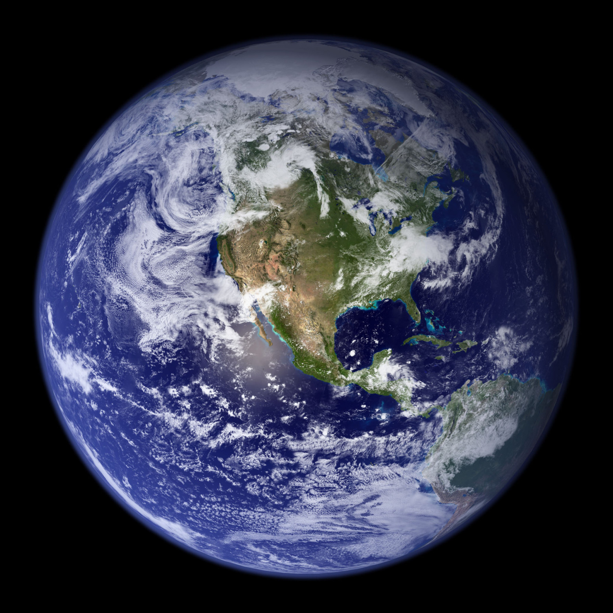
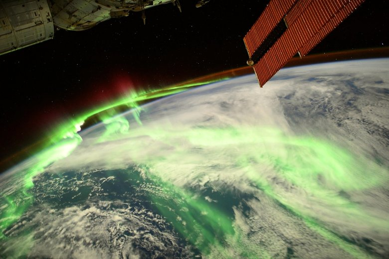
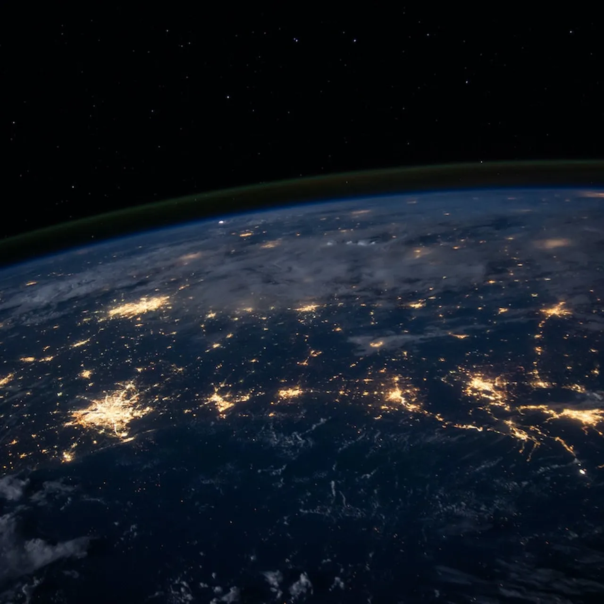

Как выглядит Земля из космоса
С орбиты Земля представляется удивительно красивой и хрупкой планетой. Благодаря космическим миссиям и спутникам у нас есть возможность наблюдать нашу планету в реальном времени. Вид из космоса подчёркивает уникальность Земли и её значение для жизни.
Когда астронавты впервые увидели Землю из космоса, они описывали её как "голубую жемчужину" на фоне чёрного космоса. На фотографиях с орбиты видно, как облака закручиваются над континентами, океаны отражают солнечный свет, а атмосфера образует тонкую голубую линию по краю планеты.
- Голубая мраморная сфера: океаны покрывают около 70% поверхности Земли, создавая насыщенный синий цвет, а облачные слои придают ей мраморную текстуру. 
- Полярные сияния: над магнитными полюсами Земли происходят яркие световые явления — зелёные, розовые и фиолетовые всполохи, вызванные взаимодействием солнечного ветра с атмосферой. 
- Ночная сторона: фотографии, сделанные ночью, показывают города как яркие точки света, образующие паутину цивилизации. Это позволяет оценить плотность населения и развитие инфраструктуры. 
- Изменения климата и природы: спутниковые снимки фиксируют изменения: таяние ледников, ураганы, пожары, наводнения и другие природные явления.
Эти изображения не только впечатляют своей красотой, но и дают учёным ценные данные о состоянии экосистем и изменениях климата. Вид на Землю из космоса напоминает нам о важности её сохранения.